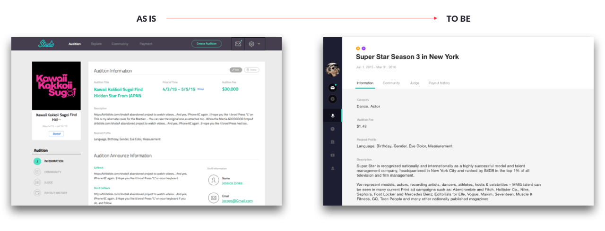
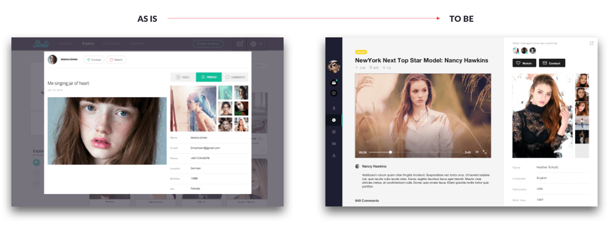

Background
'Jocoos' ran a web service called Studio, which provides auditions for the agency. At the time, I found the web service far from user-centered design. So I did a personal project to redesign it considering the user's position.
Anaylsis
I defined who the users were using this service and analyzed each user's needs and tasks.
Service Map
Based on this, I organized the functions and menus required for studio services and designed the overall service structure.
Design
Audition List
AS-IS
- It is difficult for users to recognize GNB's main menu and account-related menu at once.
- GNB's audition creation button has little correlation with each page.
- There are often no audition images.
- There is an inconvenience of going into the detail to check the key information of the audition.
- There is an inconvenience of not being able to see the classification according to the audition status in chronological order.
TO-BE
- Position the GNB to the left and insert an icon to make it easier for users to recognize it even if it changes variable.
- Login information is added to make it easier to distinguish between main menu and account related menu.
- It is easy to distinguish between auditions by focusing on the title of the audition and by adding a category icon.
- Analyze the importance of audition information so that key audition information is exposed even if it does not enter the world.
- It provides a filter function that can be classified according to the audition status for ease of viewing.
Audition Detail

AS-IS
- The GNB and the left detailed menu are confusing to users.
- The detailed menu is located under the audition thumbnail, making it difficult to move between menus.
- The same information as the audition is unnecessarily repeated.
- Information is inconvenient because of the mixed layout configuration.
TO-BE
- Position the GNB to the left and insert an icon to make it easier for users to recognize it even if it changes variable.
- The detailed menu is placed under the audition title to make it easier to move between menus.
- Eliminate the audition list information and repeated information and unify the information format.
- A single-page grid makes it easier for users to see at a glance.
Video List
AS-IS
- The upper GNB and image category classification areas cover many areas.
- In order for the user to scroll down and sort images, they must go back to the top.
- Besides the video thumbnail, the title and the author, the necessary image information cannot be viewed at a glance.
- Watch and contact functions are less frequently used in the image list.
TO-BE
- The categories and classification menus are located to the right, allowing users to access the menus at once even if they scroll.
- Categorize the image information so that users can see the information they need at a glance.
- Re-defined the Watch and Contact functions so that images can be captured and viewed later by adding a collection function that can occur from the image list.
Video Detail

AS-IS
- It is inconvenient to view the contents of the right detailed menu tab in pop-up format.
- Video and Comments don't seem to have to be divided on the detailed menu tab.
- Although images and profiles of applicants are the most important information, it is hard to see them at a glance.
- It is not possible to determine who did it if other hosts/managers were watch, contact.
TO-BE
- Vertical screen segmentation allows scrolling in each area.
- Divide the applicant image information into the profile area and the image information area to facilitate the separation of information.
- For the applicant profile, add a button to view it as a new window.
- Displays host/manager information when Watch and Contact functions are enabled.